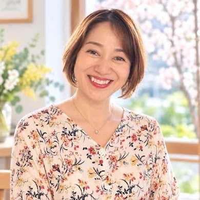

自分との
パートナーシップ体験講座
4タイプ診断 × 7日間処方箋
『今の私』に必要な一歩が見つかる60分

参加者限定・非売品
プレミアム特典つき
自分を責める毎日から、自分の味方になれる私へ
何度伝えても、分かってもらえない
どうして私ばかり頑張っているんだろう
相手さえ変われば幸せになれるのに
本当は、相手を責めたいわけではない。
分かってほしい。
大切にしてほしい。
安心したい。
ただ、それだけなのかもしれません。
繰り返す人間関係のパターンは、
性格の欠点ではなく、
関係を守るために身につけた
「頑張り方のクセ」です。
だから、責めなくて大丈夫。
気づくところから変えていけます。
60分で分かること
正解も不正解もありません
まずは、自分に問いかけてみます。
私は今、何を感じている？
本当はどうしたい？
私は私を、どう扱っている？
タイプはあなたを決めつけるものではなく、
今の自分をやさしく理解するヒントです。
※医療・心理学上の診断ではありません
A がんばり屋さんタイプ
責任感が強く、最後までやり切れる人。休むことや、人に頼ることを苦手に感じやすいタイプです。
今の一歩
一人で抱えず、一つ頼ってみる
B お世話優先タイプ
人の気持ちによく気づき、周りを大切にできる人。自分の望みを後回しにしやすいタイプです。
今の一歩
周りより先に、自分の望みを聞く
C 正解さがしタイプ
慎重で、より良い方法を考えられる人。誰かの答えがないと、不安になりやすいタイプです。
今の一歩
小さなことを、自分で選んでみる
D がまんタイプ
人との関係を大切にし、場を穏やかに保てる人。本音をため込みやすいタイプです。
今の一歩
小さな本音を、言葉にしてみる
強みを消さずに、自分にもやさしく
PREMIUM GIFT
診断して終わり、にしない。
タイプ別 7日間
自分とのパートナーシップ処方箋
診断タイプに合わせた、あなただけの実践PDF
1日3分 × 7日間
無理なく続けられる、小さな行動プラン
できた日も、できなかった日も大丈夫
特典 1
あなたの診断結果
強みと心のクセが分かります
特典 2
タイプ別7日間プラン
毎日一つだけ実践します
特典 3
7日後の振り返りシート
変化と気づきを言葉にします
A がんばり屋さん B お世話優先
C 正解さがし D がまん
この講座でしか受け取れない、参加者限定プレゼント
1日約3分。できない日があっても大丈夫。
7日後、こんな変化に
気づくかもしれません
できた日も、できなかった日も、
自分を責めずに気づくことが
自分との関係を変える一歩になります。
※感じ方や変化には個人差があります
自己紹介
秋山砂織（さおりん）
自分とのパートナーシップ講師
夫とは結婚31年。
交際期間を含めると35年になります。
相手を変えようとして苦しくなった経験から、「相手を変えなくても、関係は変えられる」ことをお伝えしています。
詳しいプロフィールは、下の文章でご紹介します
夫とは結婚31年。
交際期間を含めると35年になります。
以前の私は、夫に「もっと分かってほしい」と求め、相手を変えようとしていました。
子育てでも心配から先回りし、自分の気持ちより、家族がどうすればうまくいくかばかり考えていました。
夫婦関係が、離婚の危機を迎えたこともあります。
答えを外に探し続け、
私は自分の気持ちを見失っていました。
「私は今、どう感じている？」
「本当はどうしたい？」
そうやって、自分に聞くことを少しずつ始めました。
相手の正解を探すのではなく、自分の声を聞くようになったとき、夫婦や家族との関係が変わり始めました。
今では夫婦で同じ方向を見ながら仕事をし、「今が人生で一番幸せ」と感じています。
相手を変えなくても、関係は変えられる。
その最初の一歩を、一緒に見つけませんか？
気づいた瞬間から、
関係は変わり始めます。
参加費
3,300円
タイプ別・7日間処方箋つき🎁
お申し込み・日程のご案内は公式LINEからお届けします
相手を変える前に、
まず自分の本音を迎えにいきませんか？